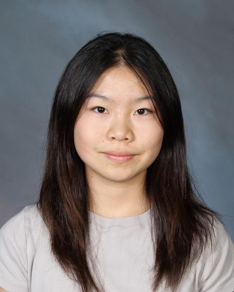
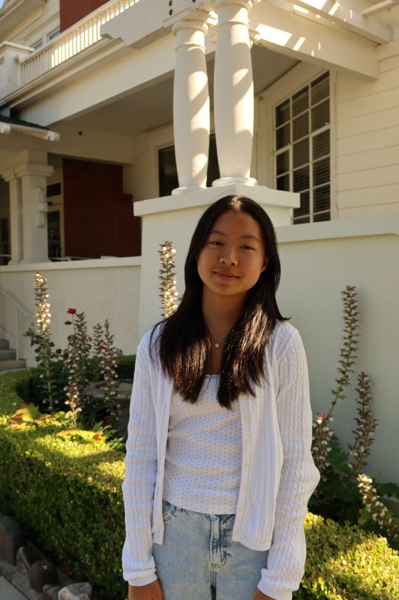

Directors
Our leadership team drives the vision and mission of Ready to Grow Initiative.

Annie Chien
Executive Director / Chief Editor
Annie Chien is a rising senior and the Founder of Ready to Grow, a nonprofit dedicated to empowering young children and families through early childhood development and caregiver education. Inspired by her passion for working with children, she believes every child deserves the opportunity to reach their fullest potential, regardless of their background or circumstances. As an aspiring pediatrician, Annie hopes to build lifelong relationships with children and their families while promoting healthy development through compassionate, evidence-based care. As Executive Director and Chief Editor, she leads the organization's vision while overseeing the development and editing of Ready to Grow's workshops, caregiver guides, and educational resources to ensure they are engaging, accessible, and evidence-based.

Megan Chien
Deputy Executive Director / Growth Director
Megan Chien is a rising sophomore, Co-Founder of Ready to Grow, and Deputy Executive Director. She is passionate about improving children's health and development by ensuring every child has an equal opportunity to thrive, regardless of their background or circumstances. As an aspiring biomedical engineer and physician, Megan hopes to combine engineering, medicine, and community service to create innovative, evidence-based solutions for pediatric healthcare. As Deputy Executive Director, she helps lead the organization's growth and strategic direction by developing new initiatives, supporting cross-department collaboration, expanding community outreach, and overseeing projects that strengthen Ready to Grow's impact.
Pia Odhrani
Outreach Director
Pia is a rising high school sophomore with interests in aerospace engineering, filmmaking, and community service. She enjoys combining creativity and problem-solving through both STEM and film, using storytelling as a way to educate, inspire, and connect with others. She believes that collaboration and innovation can make learning more engaging and accessible for children of all backgrounds. Through Ready to Grow, Pia is dedicated to supporting young children and families by helping create meaningful educational opportunities and resources for her community.

Aria Hsu
Workshop Co-Director
Aria Hsu is a rising sophomore and the Co-Director of the Workshop Department at Ready to Grow. She is passionate about working with children and creating meaningful learning experiences that support their growth and development. As an aspiring elementary school teacher or early childhood program director, Aria enjoys seeking out opportunities to work with and support younger children through volunteering, mentorship, and community involvement. Outside of school, she has played tennis for over three years and has completed multiple summers as a Counselor-in-Training (CIT) while also helping care for younger family members.
Sai Datla
Innovation & Impact Director
Sai Datla is a rising junior at Vista Ridge High School and serves as the Innovation & Impact Director for Ready to Grow. He is passionate about healthcare, research, and helping children and families access valuable resources. Through Ready to Grow, he enjoys developing new initiatives and finding creative ways to expand the organization's impact within the community. In the future, he hopes to pursue a career in medicine and continue making a positive impact in his community.
Lumana M.
Co-Social Media Director
Lumana M. is a rising sophomore and serves as the Co-Social Media Director of Ready To Grow. She helps manage educational content that makes child development and health information more accessible to families through social media. Driven by a love for science and service, she aspires to become a dermatologist and make a meaningful difference in patients' lives. Outside of Ready To Grow, she enjoys reading, playing music, singing, dancing, and staying active through fitness.